Prohlédněte si video a fotografie nového projektu REZIDENCE PADOCHOV. Galerie je společná pro celý projekt; interiérové fotografie pocházejí ze vzorového domu č. 3.

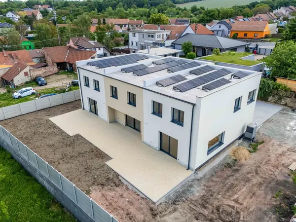


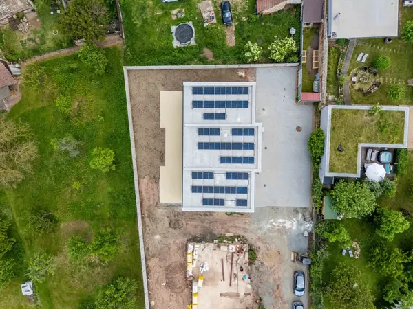
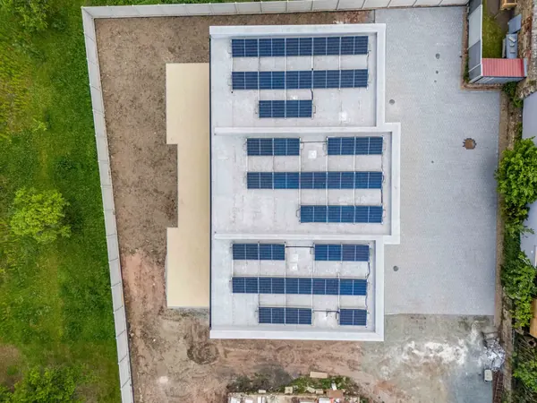
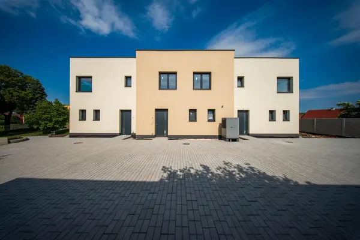
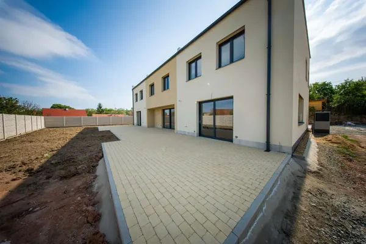

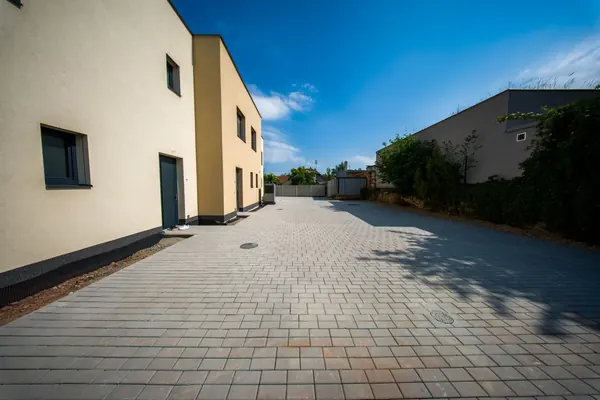
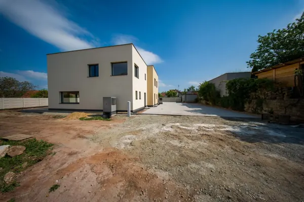
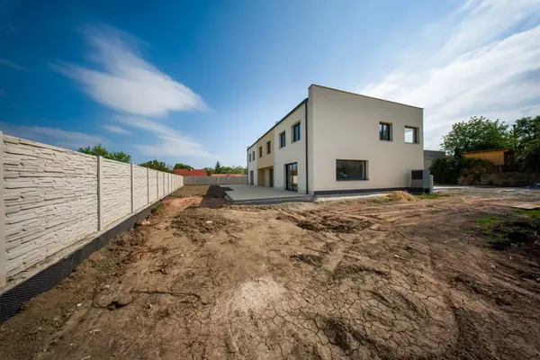

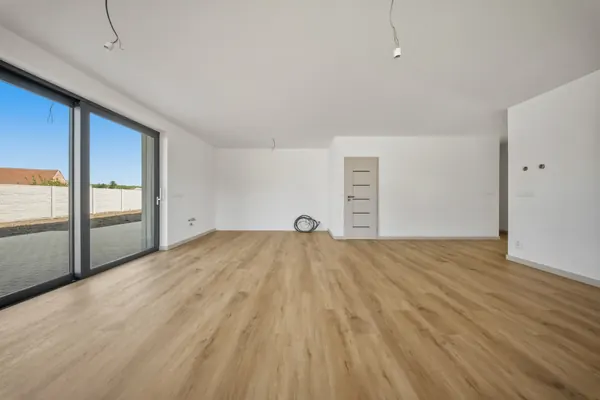
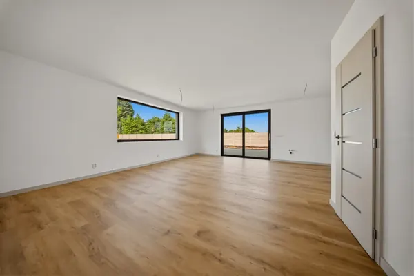
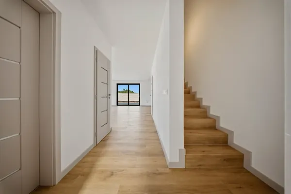
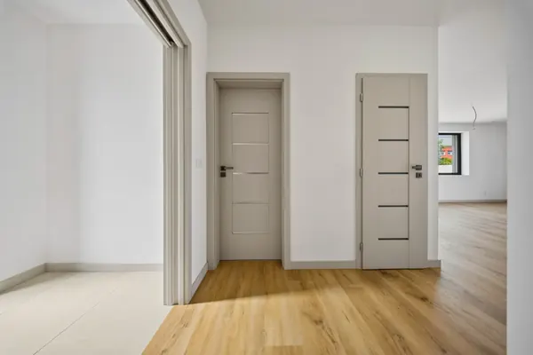
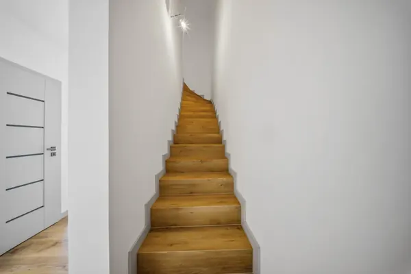
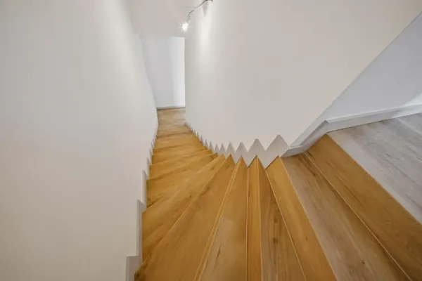

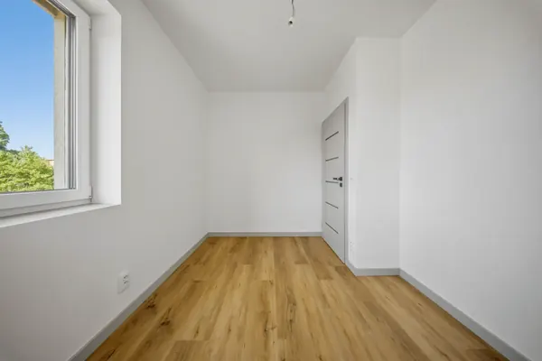
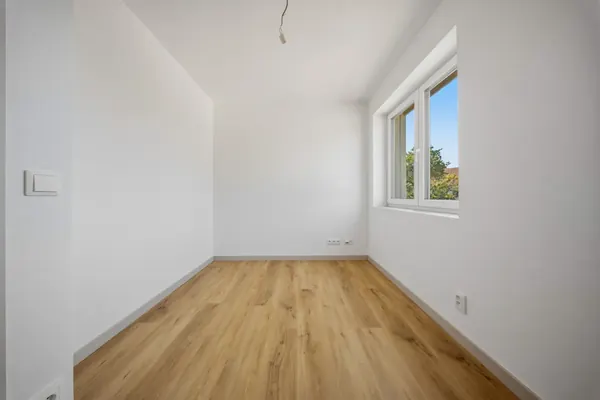
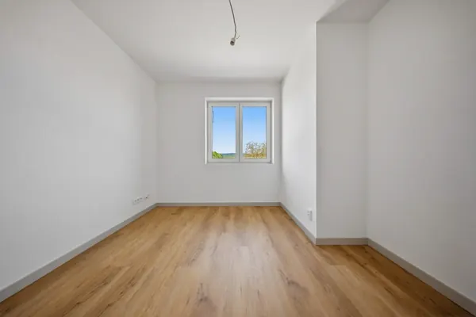

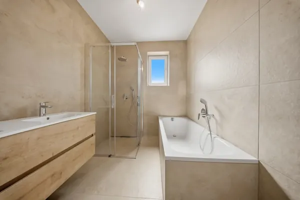
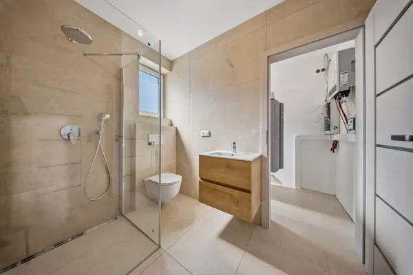
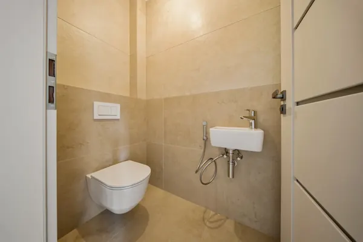
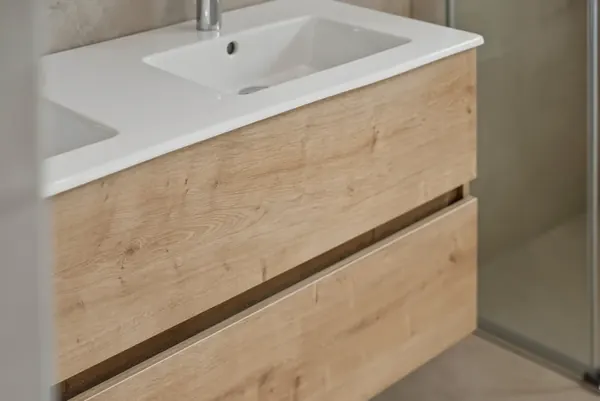
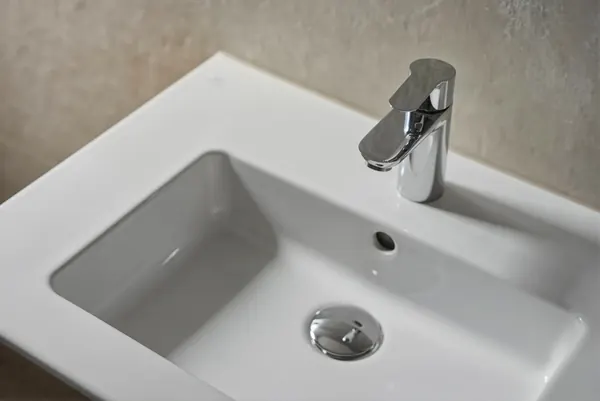
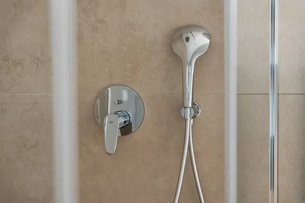
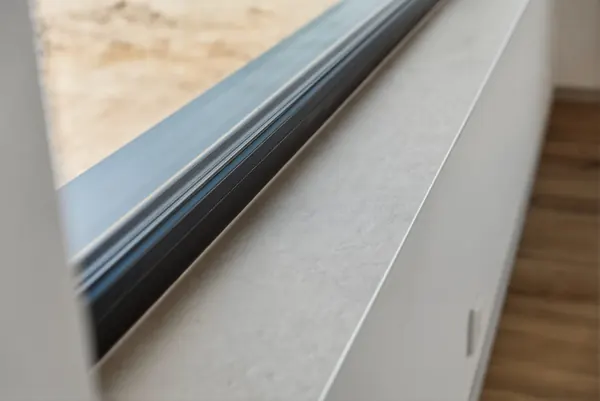
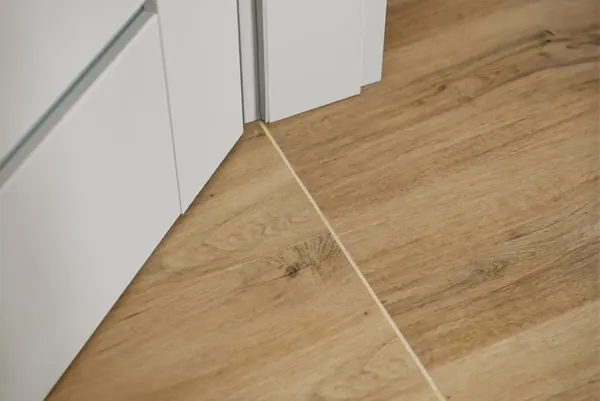
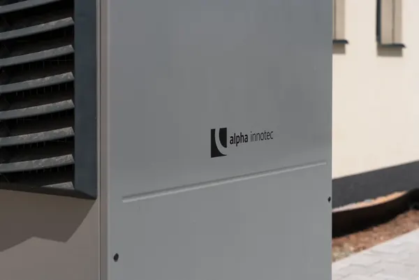


Zobrazené snímky jsou aktuální fotografie z realizace projektu (vzorový dům č. 3); některé interiéry jsou zachyceny před dokončením (montáž svítidel). Provedení standardů je v celém projektu shodné, jednotlivé domy se liší pouze půdorysem a orientací.
Domy předáváme prázdné, připravené k vašemu zařízení. Takto mohou pokoje vypadat po nastěhování.
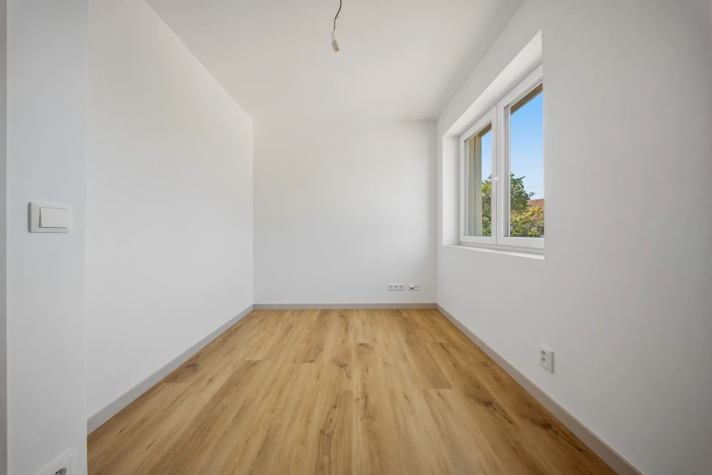
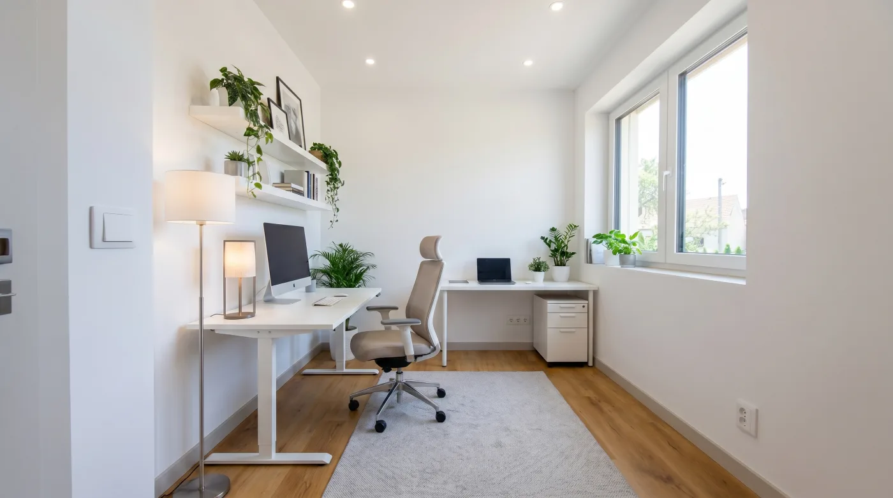
Pracovna
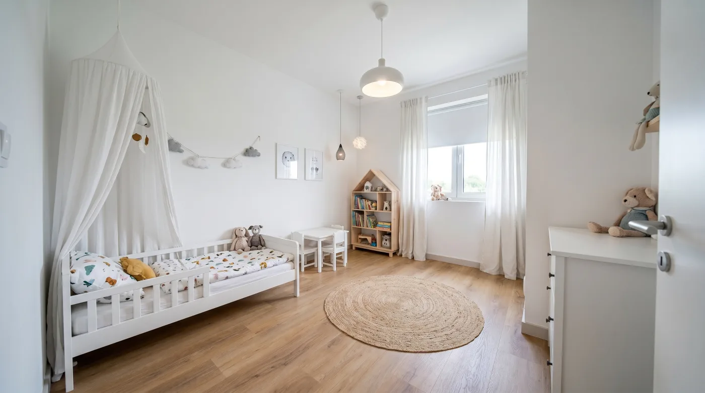
Dětský pokoj
Další pohledy na zařízení
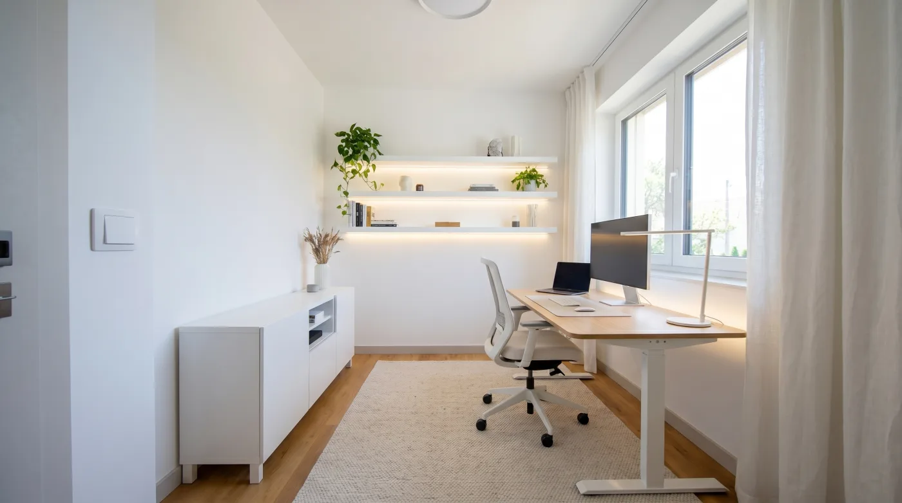
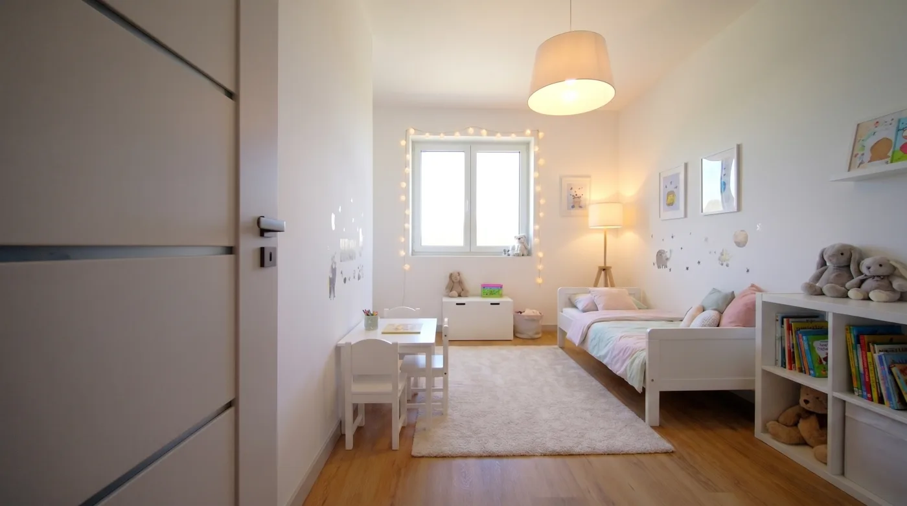
Vizualizace jsou ilustrační a slouží jako inspirace pro zařízení interiéru.
Neformální průvod domem s makléřem, pár krátkých záběrů z prohlídky.